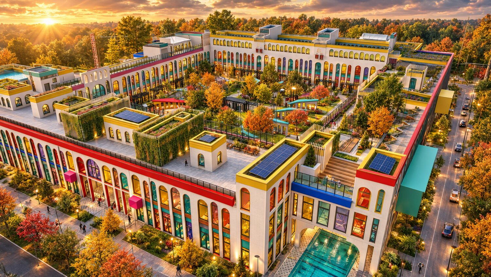
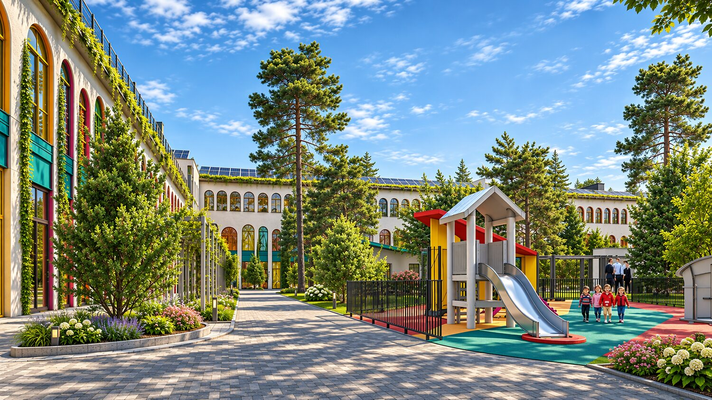
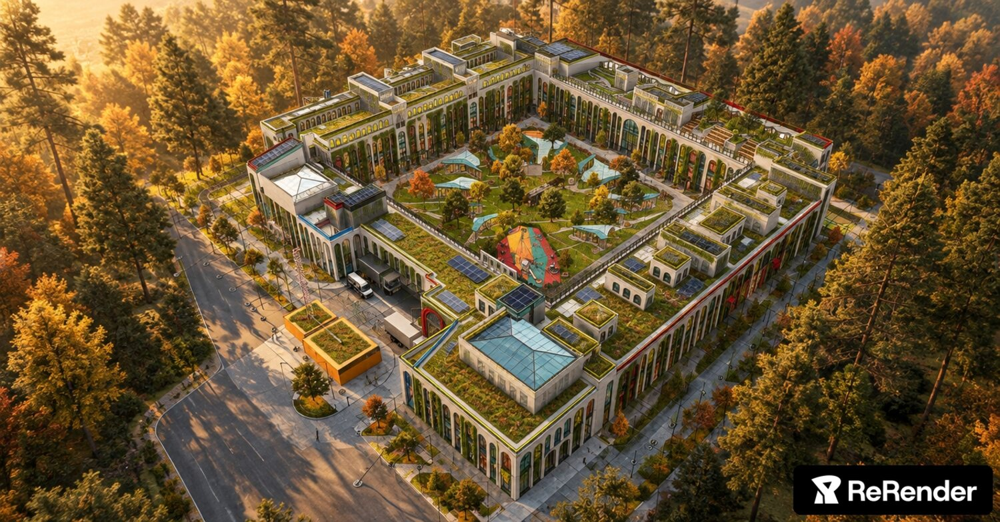
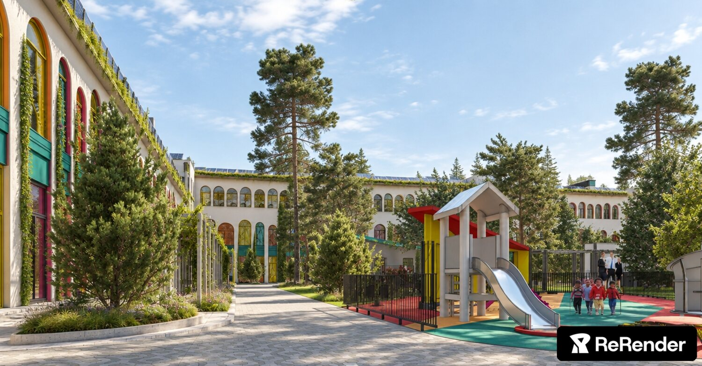
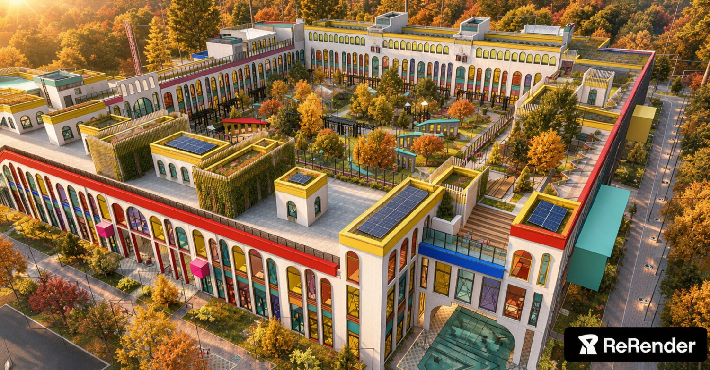

Коротко: что происходит с проектомТри разных объекта на одном участке — и ни один из них не доведён до схемы
Одна и та же площадка показана в трёх визуальных языках и двух сезонах. Заказчик видит «красиво», проектировщик — три несводимых объекта.
Высота и количество ярусов арок меняются от кадра к кадру. Нет единого модуля — значит, нет и рабочей документации.
Показанный «квартал» в 3–4 раза больше реального здания сада на 220–240 мест. Это ключевое противоречие проекта.
Изображения сделаны как атмосферные картинки, а не как проектная подача. У них нет общей геометрии, общей палитры и общей типологии. Ниже — что с этим делать: сначала зафиксировать одну архитектурную схему (план, модуль, палитра, кровля, двор), затем на её основе пересобрать визуализации. Тогда каждая следующая картинка будет уточнять проект, а не создавать новый.
Что именно не сходитсяРазбор по кадрам: геометрия, масштаб, палитра, кровля, двор, транспорт, качество подачи
Ниже — восемь изображений в том виде, в котором они пришли, с пометками о том, что в каждом кадре работает, а что противоречит остальным.





Диагноз по группам
A. Архитектурный язык
- Три стилистики. Кадры 01/06 — «итальянская аркада с суперграфикой»; 03/04 — «эко-квартал с зелёной кровлей»; 04 — «аквапарк со стеклянным куполом». Общего языка нет.
- Радуга вместо иерархии. На одном фасаде 6–7 акцентных цветов равной силы. Цвет ничего не обозначает — он просто раскрашивает. Для детского сада это допустимо, для архитектуры — нет.
- Арка как штамп. Арка применяется и на улице, и во дворе, и на кровле, с разным шагом и высотой. Приём перестаёт быть приёмом.
- Нет входов. Не читаются 12 групповых входов, главный вход и хозяйственный въезд. Вход — единственное, что должно быть видно на фасаде сада.
B. Масштаб и типология
- Здание не по программе. Для 220–240 мест нужно 3,0–3,5 тыс. м² общей площади; показанное каре — в разы больше. Либо это не сад, либо это «детский квартал» с другими функциями.
- Высота «плывёт». От кадра к кадру 2 или 3 этажа. Нет единой высоты этажа и карниза.
- Витрины в пол. Стекло 0–3,6 м на детском фасаде — это перегрев, инсоляция, безопасность и мытьё. Нужны подоконная часть, защитные ограждения, солнцезащита.
- Кровля как сцена. Террасы, по которым гуляют взрослые, — на детском учреждении это требует ограждений 1,2 м, эвакуации и расчёта нагрузки; на картинках этого нет.
C. Кровля, вода, инженерия
- Всё сразу. Зелёная кровля + СЭС + террасы + зенитные фонари на одном скате. Панели затеняются объёмами и деревьями — работать не будут.
- Вода на кровле. На кадрах 01/06 читается бассейн на крыше; у входа — стеклянная пирамида «с водой». Для ДОУ это спорное решение: безопасность, санитария, эксплуатация. Нужно решение — оставляем или убираем.
- Нет технического контура. Не показаны венткамеры, ИТП, место для наружных блоков, доступ обслуживания к кровле.
- Зелёные стены нависают над окнами групп: затемнение, влага, насекомые, обслуживание. Нужна регламентация: не выше 1-го этажа или на глухих участках.
D. Двор, транспорт, безопасность
- Двор перегружен. Перголы, павильоны, огороды, пруды, площадки, заборчики — одновременно. Свободного газона для бега почти нет.
- Деревья вплотную. Сосны в 3–5 м от стены: корни, хвоя, ветровал, затенение групповых. На кадре 04 лес стоит практически на отмостке.
- Машины у фасада. Парковка по фронту, грузовики во дворе, нет разделения потоков «дети / родители / хозяйство».
- Нет периметра. Ограждение, КПП, один контролируемый вход — обязательные элементы, на картинках их нет.
Что в проекте уже хорошоПять качеств, которые нужно защитить, а не перерисовать
Каре
Замкнутый периметр — правильная типология для участка с ветрами и шумом. Двор защищён, фасады получают свет, граница участка читается.
Аркада
Ритм арок — сильный, узнаваемый приём. Он даёт тень, масштаб и «детскую» пластику. Его нужно не менять, а нормировать.
Цвет
Цветные окна и акценты — то, за что проект запоминают. Задача не убрать цвет, а выстроить его иерархию.
Зелёная кровля
Эксплуатируемая кровля с газоном и СЭС — реальное конкурентное преимущество и экологическая повестка.
Парковый контекст
Сосны и клёны вокруг — главный «материал» участка. Их нужно сохранить и вписать в сценарий прогулок.
Двор как комната
Идея «двор — это ещё одно помещение группы» уже заложена. Её надо довести до зонирования.
Два этажа
Малая этажность — правильный выбор для дошкольников: эвакуация, вертикальные связи, безопасность.
Масштаб деталей
Скамьи, ступени, ниши, низкие окна — человеческий масштаб уже присутствует в кадрах 02 и 05.
Единая схема проектаПлан, модуль, палитра, кровля, двор, транспорт — шесть решений, которые связывают всё остальное
Схема ниже — не финальный проект, а рамка. Внутри неё можно менять размеры и отделку, но нельзя менять принцип: каре, два этажа, аркадный модуль, ограниченная палитра, зонированная кровля, разделённые потоки.
3.1 Генплан и функциональное зонирование
Схема не в масштабе; пропорции уточняются после принятия вместимости. Ориентир: участок 1,55 га, пятно застройки ≈ 3 900 м² (при сценарии «детский квартал» — до 6 900 м²).
3.2 Разрез: два этажа, аркада, кровля
Разрез показывает главный принцип: высота карниза одна по всему периметру, кровля читается как пятый фасад, а двор работает как «внешняя комната» групп.
3.3 Фасадный модуль: одна арка, три типа
Вместо «радуги по всему фасаду» — три типа проёма в одном модуле. Тип определяется функцией, цвет — типом. Это даёт разнообразие без хаоса и позволяет собирать любой фасад из одного набора элементов.
Геометрия модуля
- Сетка колонн 7,2 × 7,2 м, шаг проёмов 4,2 м, арка 1,8 м в свету
- Высота этажа 3,6 м, два этажа, карниз +8,4 м, парапет +9,3 м
- Глубина корпуса 13,2 м — группы с двусторонним светом
- Подоконник 0,7 м, верх проёма 2,9 м: ребёнок видит улицу, взрослый — двор
Что это чинит
- Исчезает «витринность»: витрин в пол больше нет
- Появляется адресация: цвет входа = номер группы
- Упрощается производство: 3 типа изделий вместо 20
- Визуализации становятся сопоставимыми: один и тот же фасад в любом кадре
3.4 Палитра: правило 80 / 15 / 5
Цвет в проекте остаётся, но получает иерархию. Восемьдесят процентов фасада — тёплый белый и камень. Пятнадцать — два акцентных цвета на корпус. Пять — цвет входов и навигации. Одновременно на одном фасаде — не более трёх цветов.
| Элемент | Цвет | Доля | Правило |
|---|---|---|---|
| Стена, простенки, карниз | Тёплый белый / камень | 80 % | Без исключений: цвет никогда не заливает плоскость целиком |
| Откосы, ставни, рамы групп | Жёлтый + один цвет корпуса | 15 % | У каждого корпуса свой второй цвет; на фасаде — не больше двух |
| Входы, навигация, МАФ | Красный, бирюза, синий | 5 % | Только на функциональных узлах; дублируется в интерьере |
| Магенто, фиолетовый, оранжевый | — | 0 % | Из фасадной палитры исключаются: уходят в игровое оборудование и графику |
3.5 Кровля: три зоны вместо «всего сразу»
Кровля — самый заметный ракурс проекта (кадры 03 и 04). Сейчас на ней одновременно газон, СЭС, террасы и фонари, и они мешают друг другу. Предлагается жёсткое зонирование по сторонам света.
Правила кровли
- Одна зона — одна функция. Не смешивать СЭС и озеленение на одном скате: обслуживание и затенение конфликтуют.
- СЭС только над техпомещениями и без деревьев рядом. Ориентация — юг/запад, наклон 30–35°.
- Террасы — только юг и только с выходом из групповой; ограждение 1,2 м, настил, пергола.
- Зелёная кровля — север и восток. Экстенсивный седаум: 40–80 кг/м², без полива.
- Один световой фонарь над залом, не «пирамида у входа»: фонарь ставится над пространством, которое освещает.
3.6 Двор: «внешняя комната» группы, а не парк аттракционов
Сейчас двор — набор красивых объектов. Предлагается превратить его в четыре возрастных двора вокруг общей площади-амфитеатра, где у каждой группы есть свой выход, своя тень и своя площадка.
Баланс территории двора
Сегодня на картинках доля «объектов» и мощения — больше половины. Ребёнку негде просто бегать.
Пять правил двора
- Один двор — один возраст. Ясли, младшие, средние, старшие — четыре кластера, разделённые не заборами, а посадками и рельефом.
- Выход из группы — сразу во двор. Не через коридор и вестибюль: 12 прямых выходов.
- Центр свободен. Площадь-амфитеатр 25–30 м в диаметре: линейка, праздники, театр, зимний каток.
- Тень обязательна. Не менее 20 % площади в тени в полдень; деревья — лиственные, крупномеры с комом.
- Никаких прудов. Вода — только питьевые фонтанчики и «сухой ручей»; открытые водоёмы для ДОУ не проектируем.
Огород и метеостанция
20 грядок 1×2 м по периметру, теплица 12 м², метеоплощадка с флюгером и дождемером. Это не декор — это часть образовательной программы.
Тропа здоровья
Кольцо 180 м с покрытиями разной фактуры: песок, щепа, камень, трава. Работает и как дренаж, и как «маршрут прогулки» в дождь.
Сцена и амфитеатр
Три ступени-трибуны на 80 мест, навес-пергола, розетка и свет. Один объект вместо пяти павильонов — и он реально используется.
3.7 Транспорт и безопасность: три потока, один вход
Один вход для людей
Все дети и сотрудники проходят через главный вестибюль с КПП. Групповые входы — только из двора, для прогулок.
Drop-off без пробок
Карман на 5 машин, «поцеловал — уехал», 3 минуты. Разворотная площадка для школьного автобуса — в хоззоне.
Периметр
Ограждение 1,8 м, видеонаблюдение по периметру, тревожная кнопка, освещение 50 лк по маршрутам.
Сколько здесь может быть детейТри сценария вместимости — и почему от выбора зависит всё остальное
Пока не принята вместимость, нельзя определить ни площадь, ни количество групп, ни размер двора, ни число парковочных мест. Это первое решение, которое нужно зафиксировать.
| Сценарий | Мест | Площадь здания | Пятно / этажность | Двор | Что это значит |
|---|---|---|---|---|---|
| А. «Сад» базовый, рекомендуется |
220 12 групп |
3 200 м² | 2 100 м² 2 этажа |
2 400 м² | Компактный П-образный блок 75×50 м. Двор защищён, все группы с прямым выходом. Экономика и эксплуатация — предсказуемые. |
| Б. «Детский квартал» если каре — условие |
160 + 400 мест доп. |
8 500–9 000 м² | 4 500 м² 2 этажа |
3 000 м² | Сад + школа искусств + семейный клуб + бассейн для района. Полное каре оправдано, но появляются четыре оператора и общий график доступа. |
| В. «Сад-гигант» не рекомендуется |
320 16 групп |
4 800 м² | 2 800 м² 2 этажа |
4 000 м² | Огромный коллектив, длинные коридоры, эпидемиологические риски, очередь на входе. Масштаб картинок ближе к этому, но педагогически это худший вариант. |
Функциональная программа сценария А (220 мест)
| Группа помещений | Состав | Кол-во | Площадь |
|---|---|---|---|
| Групповые ячейки | игровая 56 + спальня 40 + раздевалка 16 + буфет 8 + санузел 12 + веранда 30 | 12 | 1 940 м² |
| Музыкальный зал | зал 180 + костюмерная 20 + инвентарная | 1 | 210 м² |
| Физкультурный зал | зал 150 + снарядная 20 | 1 | 170 м² |
| Бассейн опция | чаша 6×10, раздевалки, душ, техпомещение | 1 | 300 м² |
| Студии | ИЗО 60 · конструирование 50 · мультстудия 40 | 3 | 150 м² |
| Кабинеты специалистов | логопед 18 · психолог 18 | 2 | 36 м² |
| Медицинский блок | врач 18 · процедурная 14 · изолятор 2×10 | — | 62 м² |
| Пищеблок | полный цикл, кладовые, мойка | 1 | 220 м² |
| Прачечная и хозблок | стирка, сушка, глажка, склад | — | 100 м² |
| Администрация | кабинет, методкабинет, комната персонала | — | 140 м² |
| Вестибюль и КПП | тамбур, гардероб, ожидание родителей | — | 150 м² |
| Технические помещения | ИТП, венткамеры, электрощитовая, связь | — | 220 м² |
| Итого полезная | без коридоров и конструкций | — | 3 698 м² |
| Общая площадь здания | с циркуляцией ×1,18 | — | ≈ 4 360 м² |
Площади — ориентировочные, для проверки баланса; уточняются по СП 252.1325800.2016 и СанПиН 2.4.3648-20. Показатель ≈ 14 м²/место — комфортный уровень для ДОУ с бассейном и студиями.
групповых ячеек с отдельным входом со двора
двор-парк, 40 % свободный газон
солнечная генерация на кровле
парковка + 5 drop-off + 30 веломест
Двенадцать предложенийОт «принять решение» до «перерисовать кадр» — по убыванию влияния на проект
Предложения сгруппированы по приоритету. Первые четыре меняют проект, остальные — приводят его в порядок. Все они выполнимы без пересмотра градостроительной посадки.
1. Зафиксировать вместимость
Определить: 220 мест (сценарий А) или 160 + допобразование (Б). От этого зависят площадь, число групп, двор, парковка и смета. Без этого решения дальнейшее проектирование невозможно.
2. Одна высота, два этажа
Задать единую отметку карниза +8,4 м и парапета +9,3 м по всему периметру. Убрать третий ярус арок и «мансардные» надстройки, которые появляются в разных кадрах.
3. Ввести фасадный модуль
Шаг 4,2 м, арка 1,8 м, три типа проёма (окно / вход / общий блок). Все фасады собираются из одного набора. Это одновременно и стиль, и способ производства.
4. Ограничить палитру
Шесть цветов, правило 80 / 15 / 5, не более трёх цветов на фасад. Магенто и фиолетовый уходят в игровое оборудование и графику, не в стены.
5. Разделить кровлю на зоны
Зелёная кровля — север и восток; террасы — юг; СЭС — запад над техзоной; техника — углы. Один световой фонарь над залом. Пирамиду у входа и бассейн на кровле убрать.
6. Пересобрать двор
Четыре возрастных кластера по сторонам, центр — площадь-амфитеатр, 12 прямых выходов из групп, 40 % свободного газона, обязательная тень. Павильоны и пруды — убрать.
7. Отодвинуть деревья
Крупномеры — не ближе 8–10 м от стен. Существующие сосны сохраняем выборочно, остальные — в буферную зону. Компенсационная посадка 1:2.
8. Разделить потоки
Люди — через главный вход и КПП; родители — drop-off на 5 машин; хозяйство — отдельные ворота и двор. Парковка за буферной зоной, не перед фасадом.
9. Собрать энергоэффективность в систему
Тепловые насосы, вентиляция с рекуперацией ≥ 80 %, СЭС 130 кВтп, сбор дождевой воды с кровли для полива, датчики CO₂ и света в группах.
10. Показать безопасность
Периметр 1,8 м, один контролируемый вход, КПП, видеонаблюдение, освещение маршрутов, антитеррористические мероприятия. На визуализациях этого нет вообще.
11. Убрать декор без функции
Тенты-«магазины», подиумы на кровле, стеклянные пирамиды, радужные простенки, декоративные пруды. Каждый элемент должен отвечать на вопрос «зачем».
12. Сделать единый сет кадров
Шесть канонических ракурсов, один свет, один сезон, один уровень детализации. Тогда каждое следующее изображение будет уточнять проект, а не создавать новый.
Что убрать, что добавить, что оставить
Убрать
- Третий ярус арок и надстройки на кровле
- Витрины в пол и «магазинные» тенты
- Стеклянную пирамиду и бассейн на кровле
- Пруды и водоёмы во дворе
- Пять лишних акцентных цветов
- Водяные знаки и дубликаты в подборке
Добавить
- Читаемые входы в каждую группу
- Навесы, пандусы, тактильные маршруты
- Амфитеатр и сцену во дворе
- Огород, метеостанцию, тропу здоровья
- КПП, периметр, освещение
- Технический контур и доступ на кровлю
Оставить
- Каре и замкнутый защищённый двор
- Ритм арок как основной приём
- Цветные окна и акценты
- Зелёную кровлю и СЭС
- Сосны и парковый контекст
- Два этажа и человеческий масштаб
Решения, которые нужны от заказчика
| № | Решение | Варианты | Влияние | Срок |
|---|---|---|---|---|
| 1 | Вместимость и тип объекта | А / Б / В | Площадь, смета, состав помещений | 1–2 недели |
| 2 | Бассейн | есть / нет / сухой дворик | +300 м², инженерия, персонал | 1–2 недели |
| 3 | Этажность и высота карниза | 2 этажа / 2 + мансарда | Габариты, эвакуация, облик | 2 недели |
| 4 | Парковка | на участке / только drop-off | Баланс территории, двор | 2 недели |
| 5 | Кровля | зелёная / террасы / СЭС — доли | Конструкция, нагрузка, эксплуатация | 3 недели |
| 6 | Двор | 4 кластера / общий парк | Педагогика, безопасность, смета | 3 недели |
Как доводить проектЧетыре этапа на 20 недель — от решений до комплекта визуализаций
Решения
Вместимость, бассейн, этажность, парковка, доли кровли, сценарий двора. Протокол с заказчиком — 2 страницы.
Результат: утверждённая программа-задание.
Схема
План, разрез, фасадный модуль, палитра, зонирование кровли и двора. Одна сводная схема на 1 листе А1.
Результат: архитектурная концепция, 1 лист + пояснительная записка.
Проверка
Инсоляция, пожарная эвакуация, доступность МГН, баланс территории, ТЭО инженерии, укрупнённая смета.
Результат: концепция, прошедшая внутреннюю экспертизу.
Подача
Шесть канонических визуализаций, аэросъёмка-схема, альбом А3, короткое видео 40 секунд.
Результат: комплект для заказчика и публичных слушаний.
Стандарт визуализацииШесть кадров вместо восьми случайных — и правила, по которым они делаются
Стилистический разнобой лечится не «более красивым рендером», а регламентом. Ниже — обязательный набор ракурсов и технические правила, которые делают кадры сопоставимыми.
| № | Кадр | Задача | Что обязательно видно |
|---|---|---|---|
| 1 | Главный фасад с улицы | Образ и вход | Аркада, главный вход, вывеска, бульвар, люди |
| 2 | Двор от входа | Среда | Амфитеатр, выходы групп, деревья, покрытия |
| 3 | Аэро с юго-запада, 45° | Градостроительная посадка | Каре, кровля, парковка, контекст леса |
| 4 | Кровля крупно | «Пятый фасад» | Терраса, СЭС, седаум, ограждения |
| 5 | Вход в группу | Масштаб и детали | Навес, пандус, цвет-адрес, тактильная плитка |
| 6 | Вечерний свет | Безопасность и сценарий | Освещение фасада, маршруты, окна групп |
Технические правила
- Одна 3D-модель. Все кадры — из одного файла. Любое изменение геометрии проходит через модель.
- Один свет: лето, 10:00, солнце 35°, мягкие тени. Закат — только для одного «эмоционального» кадра.
- Одна камера: 35 мм, высота 1,6 м для «человеческих» кадров, 24 мм — для аэро.
- Один набор растений: сосна, клён, липа, злаки, гортензия. Никаких пальм и цветущей сакуры.
- Люди в масштабе: дети 1,1–1,3 м, взрослые 1,7 м, 3–6 человек в кадре, без постановочных улыбок в камеру.
- Форматы: 16:9 для презентации, 1:1 для соцсетей, 9:16 для вертикали. Без водяных знаков и логотипов генераторов.
Что исправить в текущих файлах
- Удалить дубликат и два кадра с водяным знаком ReRender.
- Привести все кадры к одному сезону — лето (сейчас смешаны лето и золотая осень).
- Убрать третий ярус арок там, где он появился.
- Заменить тип детской площадки на согласованный (возрастное зонирование, тень).
- Убрать «воду» у входа и на кровле до принятия решения по бассейну.
- Добавить периметр, КПП и освещение — сейчас объект выглядит открытым.
Кадр 02 предлагается сделать эталоном: этот свет, эта плотность зелени, этот масштаб деталей. Все остальные визуализации приводятся к нему.
Нормативная рамка и вопросыЧто проверить и что уточнить до начала следующего этапа
Нормативные ориентиры
- СП 252.1325800.2016 — здания дошкольных образовательных организаций
- СанПиН 2.4.3648-20 — условия воспитания и обучения
- СанПиН 1.2.3685-21 — гигиенические нормативы (инсоляция, микроклимат)
- СП 59.13330.2020 — доступность маломобильных групп
- СП 1.13130.2020 — эвакуация; СП 4.13130 — противопожарные расстояния
- СП 42.13330 — планировка и застройка территорий
- ФЗ № 384-ФЗ — безопасность зданий и сооружений
Приведено как рамка для проверки, а не как замена расчётам. Инсоляция, эвакуация и баланс территории подтверждаются проектом.
Вопросы к заказчику
- Сколько мест и сколько групп нужно в итоге?
- Нужен ли бассейн — учебный или оздоровительный?
- Каре задано градостроительно или это наша гипотеза?
- Есть ли требования к архитектурному облику района?
- Кто эксплуатирует: один оператор или несколько?
- Предусматривается ли допобразование и платные кружки?
- Какой бюджет на благоустройство двора?
- Нужна ли парковка на территории или только drop-off?
- Есть ли ограничения по высоте и по сохраняемым деревьям?
- Какой срок ввода и есть ли привязка к учебному году?
Реестр изображений
| Файл | Размер | Сюжет | Статус |
|---|---|---|---|
| goku-pink_…webp | 1360×768 | Аркада, закат, «вода» у входа | переделать |
| a_Улучши_…webp | 1672×941 | Двор днём | эталон |
| a_Улучши_…-1.webp | 1672×941 | Дубликат предыдущего | удалить |
| 1792433013635.jpg | 1408×736 | Двор, водяной знак ReRender | удалить / перерендер |
| b_Улучши_…webp | 1416×740 | Двор, водяной знак ReRender | удалить / перерендер |
| 1792432222850.jpg | 1408×736 | Аркада, закат | в работу |
| 1792432874970.jpg | 1408×736 | Аэро, золотой час, пирамида | переделать |
| gpt-image-…webp | 1672×941 | Аэро, день, парковка и грузовики | в работу |
Каркас для новых визуализацийОдин текстовый блок, который вставляется перед любым запросом на рендер
Если изображения делаются генеративно, разнобой лечится не «рукой художника», а фиксированным описанием объекта. Ниже — готовый блок: он задаёт геометрию, палитру, свет и запреты. Его нужно вставлять в каждый запрос целиком.
Детский сад в парковой зоне. Замкнутое каре 78 × 66 м, два этажа, единый карниз +8,4 м, парапет +9,3 м. Фасад: тёплый белый камень (#F2EEE4), ритм арочных проёмов с шагом 4,2 м, арка 1,8 м в свету, подоконник 0,7 м. Три типа проёма: окно группы (жёлтая рама #E8AC24), вход группы (красный портал #C63C2F, навес, пандус), общий блок (синий витраж #2B5CA8). На фасаде не более трёх цветов. Кровля: зелёная (седаум) на севере и востоке, террасы с настилом на юге, солнечные панели на западе, техблоки по углам. Двор: газон 40 %, амфитеатр в центре, четыре возрастные площадки, крупные сосны не ближе 10 м от стен, тень 20 %. Периметр: ограждение 1,8 м, КПП у главного входа. Свет: лето, 10:00, солнце 35°, мягкие тени, небо с перистыми облаками. Люди в масштабе: дети 1,1–1,3 м, взрослые 1,7 м. Запрещено: третий этаж, витрины в пол, бассейн и стеклянная пирамида, пруды, пальмы, радужные простенки, водяные знаки.
Что даёт
Любой новый кадр совместим с уже сделанными: одна геометрия, один свет, одна палитра. Правки становятся локальными, а не «перерисовать всё».
Как пользоваться
Каркас — постоянная часть; меняется только последняя строка: ракурс и задача кадра. Шесть канонических ракурсов — в разделе 07.
Чего не делает
Не заменяет проект. Каркас держит образ, но инсоляцию, эвакуацию и площади всё равно считает архитектор.